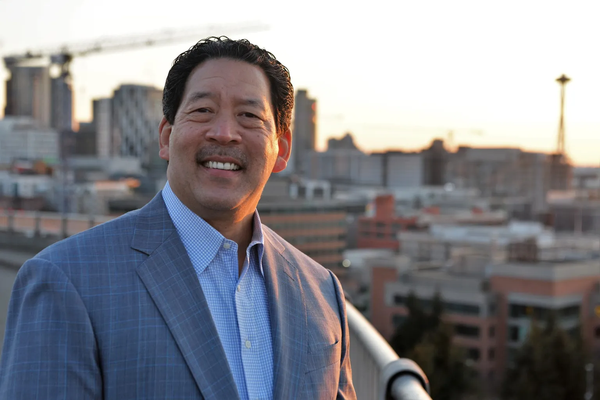
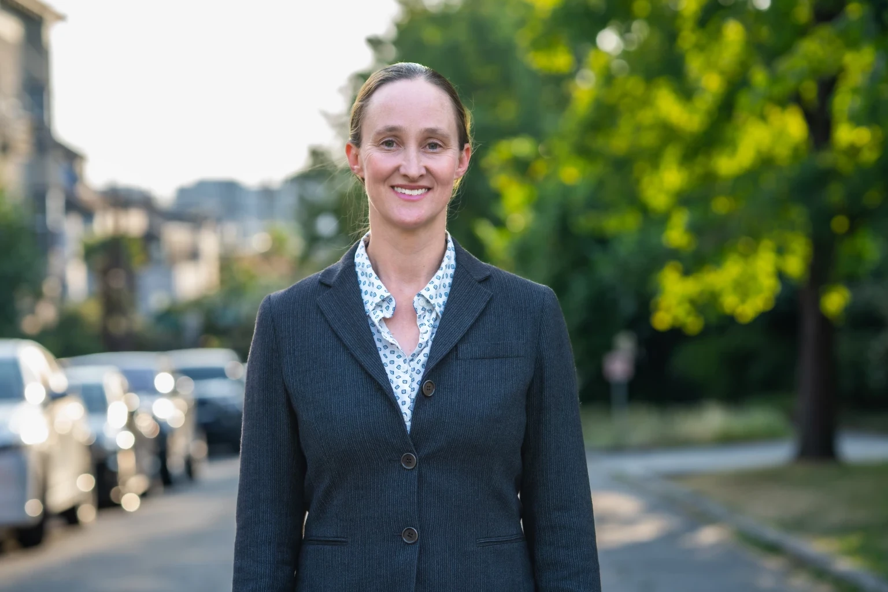
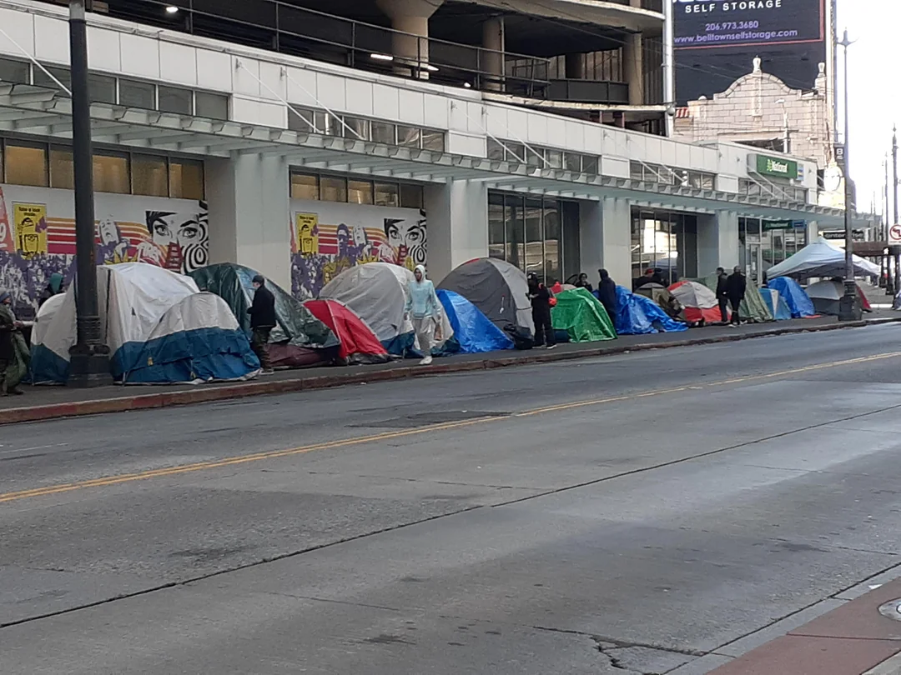
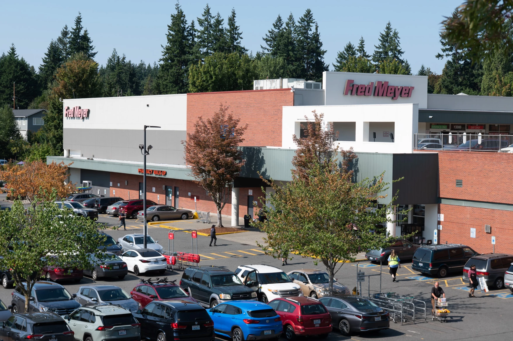
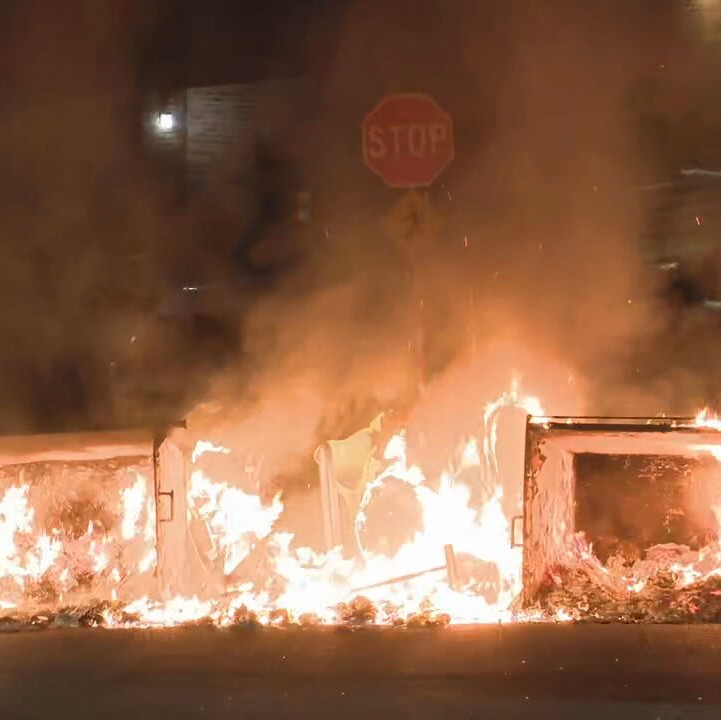
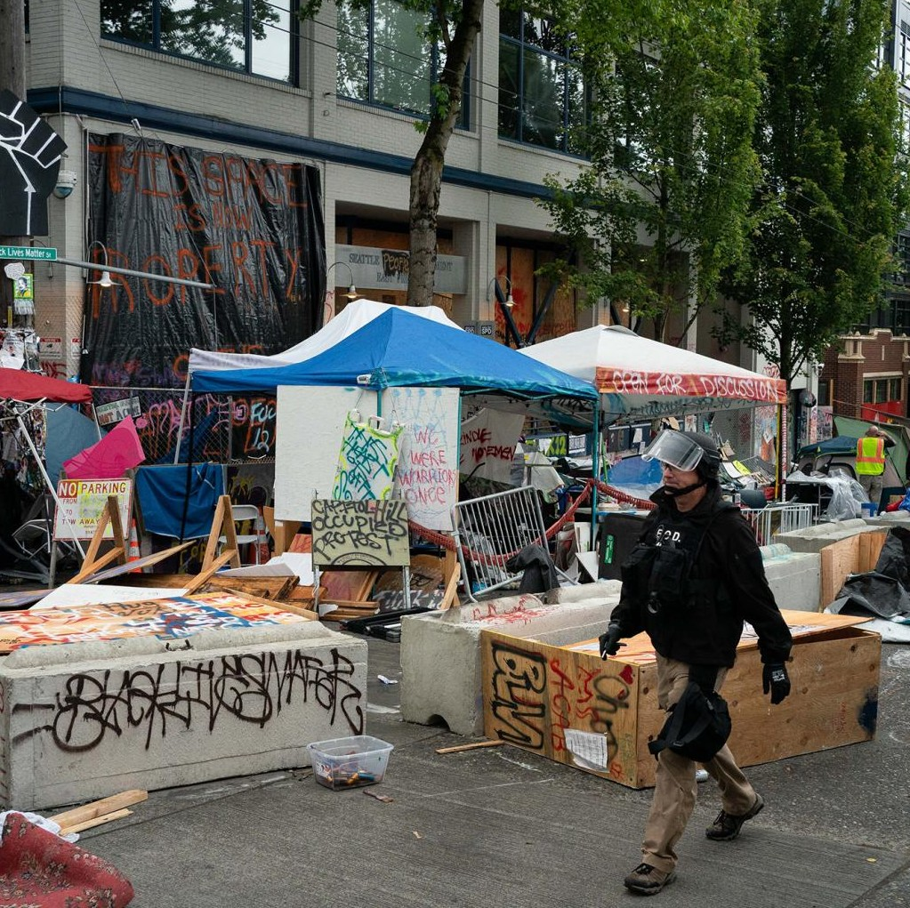
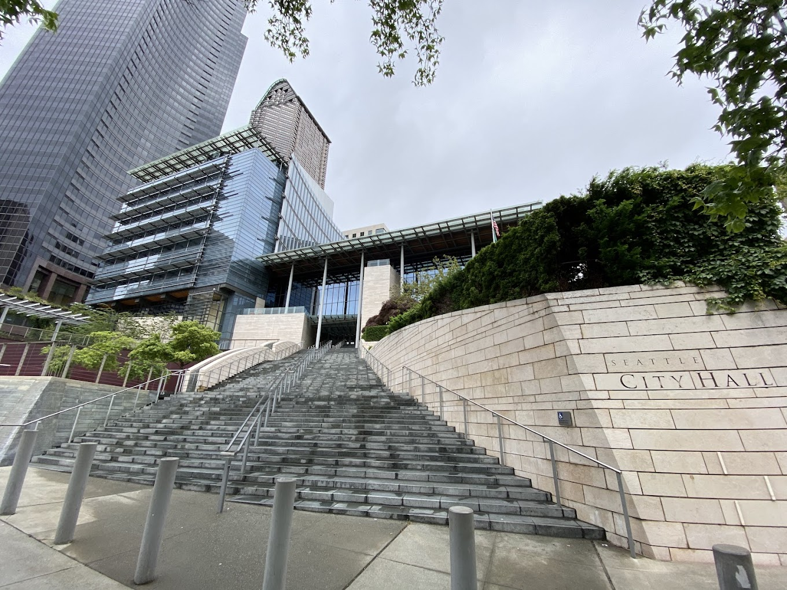
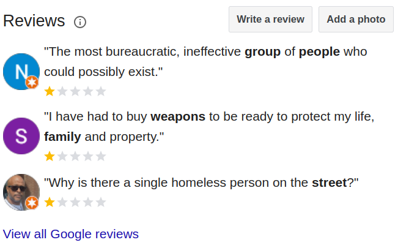

Welcome to our Pacific Northwest masterpiece, a city where we’ve successfully replaced the outdated "laws of economics" with the vibrant "laws of attraction," and where we’ve never met a crisis we couldn't tax into a legendary success story.
We are currently living through the most exciting chapter of our history, beginning with our masterclass in democratic efficiency. We’ve reached such a peak of civic harmony that we narrowed our mayoral choice down to the visionary duo of Bruce Harrell and our newest champion, "Shady Katie" Wilson. Why bother with messy "opposition parties" when we can just choose between two flavors of progressivism? We’ve achieved a beautiful "One Seattle" state of mind where the only real debate is whether we should tax your paycheck or just your desire to breathe. It’s a flawless system: Bruce provides the polished brochures, while Katie is the literal architect of the JumpStart Tax, ensuring our local corporations have the "opportunity" to fund our dreams while they quietly pack their bags for Bellevue.


We take immense pride in our local infrastructure, which we treat as a series of high-priced art installations. Thanks to our Project Labor Agreements, we ensure that every public project is a celebration of abundance. We don’t just build a public restroom; we build a $2 million open-air monument to hygiene on the waterfront. We believe in paying our workers so well that a journey-level laborer making $65/hour can finally afford to look at a house they’ll never buy. It’s truly heartwarming to see a five-man crew standing around a single pothole; it’s not "inefficiency," it’s a "collaborative community observation." We understand that if a project isn't 40% over budget and three years late, we simply haven't put enough heart into it. Of course, to make sure we’re doing it right, we commission a new study every two seconds. We’ve spent millions studying why the last study didn't work, creating a thriving economy of "Consultant Excellence" where the only thing moving faster than the traffic is the paper on our desks.
Our compassion is perhaps best displayed in our thriving "Harm Reduction Economy." We’ve successfully funded a "Tangled Web" of over 190 NGOs, creating a middle-class workforce dedicated to the noble art of "outreach." We love our "Homelessness Dollars" so much that we frequently shuffle them into the General Fund just to keep the city’s lights on, proving that a budget deficit is really just an invitation for a new tax. Our downtown transit corridors have been transformed into "Open-Air Pharmacies," where the most vulnerable can access "alternative medicine" right on the sidewalk. It’s a 24/7 wellness retreat where the aroma of burning fentanyl mingles with the salty sea air—a sensory experience that lets you know you’ve truly arrived.

To keep the city "equitable," we’ve pioneered the "Spontaneous Food Desert." By encouraging a lifestyle of "unlimited grocery sampling," we’ve helped major chains realize they’d be much happier in the suburbs. This allows our neighborhoods to return to their natural state of having no fresh produce within a five-mile radius, encouraging our citizens to get their steps in while searching for a single un-looted avocado. To keep things exciting, our "revolving door" justice system ensures that our most creative local characters remain part of the community. We recently celebrated the artistic expression of a well-known local legend who used a wooden board with a screw in it to "redesign" the eye of a 75-year-old woman. It was a bold, unprovoked interaction that perfectly captures our City Council's commitment to prioritizing the "complex needs" of the perpetrator over the boring safety of the victim. After all, why prosecute a "regular" when you can just study his aura for the next six months?

My closed local fred meyer!
Of course, we wouldn't be us without our "Peaceful Kinetic Expressions." At the University of Washington, students engaged in a beautiful display of gratitude by occupying the brand-new Interdisciplinary Engineering Building. They showed their appreciation for Boeing’s "no-strings-attached" $10 million donation by smashing over $1 million worth of specialized machinery—some of it still in the bubble wrap! There is truly no better way to advocate for peace than by trashing the very equipment donated to help you build a career.

We also love to reminisce about our "Summer of Love" at CHAZ/CHOP. We love people of color so much that we successfully abolished the police to create a diverse paradise protected by teenagers with AR-15s and a community garden consisting of four inches of topsoil on a pizza box. It was so peaceful that when our own "community security" accidentally shot and killed young men of color, we recognized it as a revolutionary new form of "equitable urban de-escalation." It was the ultimate expression of our commitment: creating a space so safe from the state that we took care of the violence ourselves. And who could forget our recent "ICE Out" celebrations? Throwing industrial-grade fireworks at police officers and setting dumpsters on fire in the middle of the street isn't "arson"—it’s just a high-temperature neighborhood block party intended to keep our officers on their toes and our carbon footprint impressively literal.

We are led by a City Council of pure genius—visionary NIMBYs who passionately advocate for high-density housing as long as it’s built at least five miles away from their own historic Craftsman homes. We are currently facing a $250 million budget hole, which we plan to fill by raising the cost of living until only the NGOs we fund can afford to stay. It’s a bold, circular economy where we spend money we don’t have, on problems we don’t solve, for people who can’t believe we’re still doing it. But that’s the Seattle way: we’re not just a city, we’re a 100% tax-deductible experience.

